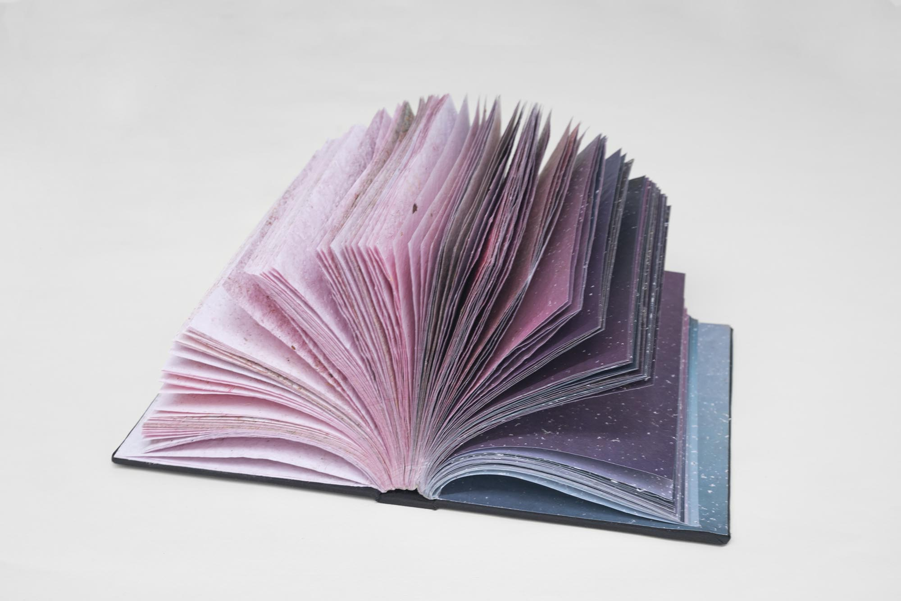
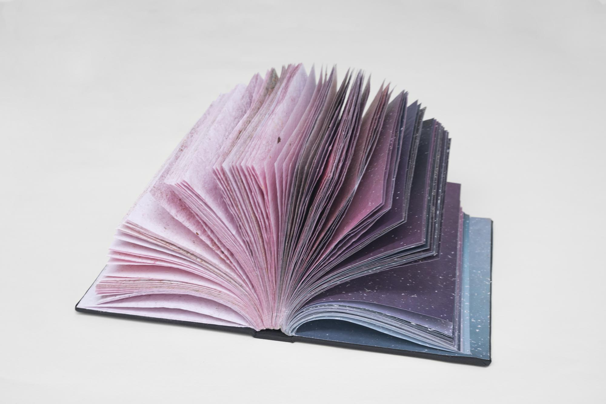

Laser Prints, Paste
variable dimensions
2021+
Rasterized prints of aerial photographs from Google Maps are installed to scale at the very location they depict.
The location and scale of the installation may vary.
 2
2
 2

3
2

3
[1] 49.01416382386086, 8.38672129282101
[2] 49.010537090765446, 8.424511253703653
[3] Conversion to Portable Document Format